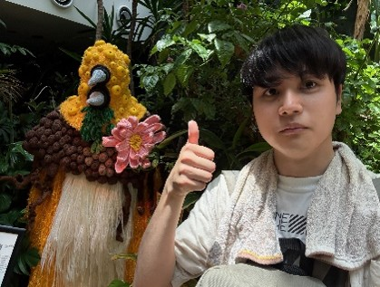

Zero-shot Hierarchical Plant Segmentation via Foundation Segmentation Models and Text-to-image Attention
WACV 2026
Show in DetailWelcome
I'm Ryohei Miyakawa (宮川 稜平), a researcher specializing in Computer Vision and Plant Phenotyping. I recently work on research and development of softwares using Large Language Models at Panasonic Corporation (i.e., JTCパワポ職人) .

I researched about computer vision and plant phenotyping at Computer Vision Laboratory, Graduate School of Information Science and Technology, The University of Osaka, under the supervision of Assistant Professor Hiroaki Santo, Associate Professor Fumio Okura, and Professor Yasuyuki Matsushita. I received my master's degree in March 2025. From April 2025, I have been working on research and development of softwares using Large Language Models (LLM) at Panasonic Corporation in Osaka, Japan.
Apr. 2025-Present: Panasonic Corporation, Osaka, Japan.
Apr. 2023-Mar. 2025: Master's student at the Graduate School of Information Science and Technology, The University of Osaka, Japan.
Apr. 2019-Mar. 2023: Bachelor's student at the Engineering Department, The University of Osaka, Japan.
Apr. 2016-Mar. 2019: Zeze High School, Shiga, Japan.
WACV 2026
Show in Detail
Plant Phenomics 2025
Show in Detail
MIRU 2023
Show in Detail